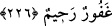

hilimle muâmele eder, tevbesini kabûl edip günahını bağışlar. İşte Allah Teâlâ’nın:
“Allah gafûrdur, halîmdir.” buyruğu buna işarettir. Bu işârî yorum et-Te’vîlâtü’n-
Necmiyye adlı eserden alınmıştır.
226. Kadınlarına yaklaşmamaya yemin edenler dört ay beklerler. Eğer (bu
müddet içinde) kadınlarına dönerlerse, şüphesiz Allah çokça bağışlayan ve
esirgeyendir.
“Îlâ” yemin demektir. Yemin ederek kadınlardan uzaklaşanlar için, herhangi bir rucû
(yemînden vazgeçip tekrar kadınlarına dönme) veya talâk isteğinde bulunmaksızın, dört
ay bekleme müddeti vardır.
Kocanın karısına îlâ yapması şöyle olur: Ya kaç ay olacağını belirterek “Vallâhi sana
dört ay veya beş ay... yaklaşmayacağım” der. Yahut her hangi bir sınırlamada
bulunmaksızın “Vallâhi sana yaklaşmayacağım” der. Şayet koca, dört aydan az bir zaman
içerisinde karısı ile cimâ yapmayacağına yemin etse, bu kişi, îlâ yapan değil, yemin
eden biri konumunda olur. Belirttiği müddet bitmeden önce hanımıyla cinsî münâsebette
bulunursa, sahîh olan görüşe göre, bozmuş olduğu yemînin keffâretini ödemesi gerekir.
Îlâ’nın iki hükmü vardır: Îlâ’dan dönmenin ve îlâ’nın gereğini yerine getirmenin
hükmü. Îlâ’dan dönülünce, şayet yemîn Allah adına yapılmışsa, îlâ müddeti içinde cinsî
münâsebette bulunmakla keffâret ödenmesi gerekir. Şayet yemin, talâk, köle âzâd etme
ve nezîr gibi şeyler cinsinden ise, o zaman bu sayılan husûslar yerine getirilir.
“Îlâ”nın hükmü ise, îlâ müddeti olan dört ayın bitmesiyle nikâh altında bulunan hür
kadının bâin talak ile boşanmış olmasıdır. Bu hüküm hür kadınlar hakkındadır. Eğer
hakkında îlâ söz konusu olan nikâhlı kadın başkasına âid bir câriye ise, iki ay geçmekle
boş olmuş olur.
Katâde demiştir ki: Cahiliyye insanları îlâ’yı, talak olarak kabûl ederlerdi.
Saîd b. Müseyyeb der ki: Îlâ, cahiliyye döneminin zararlı işlerinden biri idi. Adam
hanımından hoşlanmadığı gibi onun başka biriyle de evlenmesini istemediği takdirde
ebedî olarak ona yaklaşmayacağına yemin eder ve kadını ne dul, ne de kocalı bir hale
sokardı. Bu âdet, İslâm’ın geldiği ilk yıllarda da devam etmiştir. Fakat Allah Teâlâ
bunun böylece devam etmesini istemeyerek kadınları, bu zararlı âdetin elinden
kurtarmıştır. Bunun için de, düşünüp karara varabilmesi için erkeğe belli bir süre
tanımıştır. Eğer erkek, faydayı yemin ettiği mazarratı terketmekte görürse ona göre amel
eder. Yok eğer kadını boşayıp ondan ayrılmayı daha uygun bulursa, o zaman o yolu tutar.
Şayet hanımlarıyla cimâ’ı terketmek husûsunda yemin eden kimseler, yemînlerinden
dönerlerse şüphesiz Allah gafûrdür, rahîmdir, îlâ yapan kimsenin, kadına zarar verme